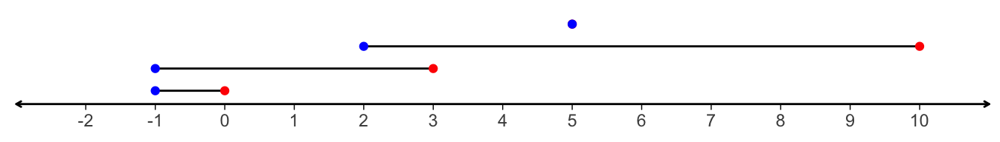
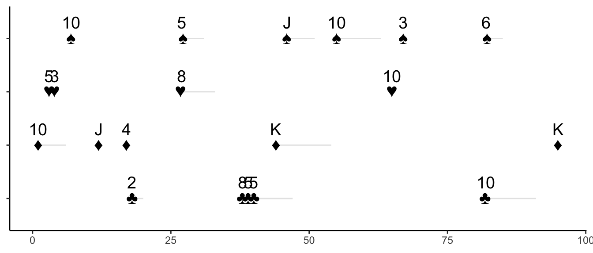

Chapter 3 Data Types
The data types formalized here will mostly be familiar to epidemiologists.
3.1 Interval
An interval \(\Xi\) is as an ordered pair defining the start and end of a segment on the integer line.
\[ \Xi := (a, b) \mid a \leq b \in \mathbb{Z} \]
Let \(\mathcal{I}\) be the set of all \(\Xi\). Here’s a few \(\Xi\)s represented visually:

To make the math concrete, define data structures in a programming language (in this case R) that align with our mathematical definition.
itv <- interval(a = 2L, b = 4L)
itv## (2, 4)We’re going to get into functions later, but a few basic functions might help contextualize what we can do with the interval data structure.
| Definition | Mapping | Description |
|---|---|---|
| \(s(\Xi) = a\) | \(s : \mathcal{I} \mapsto \mathbb{Z}\) | Gets the interval’s start |
| \(e(\Xi) = b\) | \(e : \mathcal{I} \mapsto \mathbb{Z}\) | Gets the interval’s end |
| \(shift(\Xi, c) = (s(\Xi) + c, e(\Xi) + c)\) | \(shift : (\mathcal{I}, \mathbb{Z}) \mapsto \mathcal{I}\) | Shifts an interval by \(c\) |
| \(expandl(\Xi, c) = (s(\Xi) - c, e(\Xi))\) | \(expandl : (\mathcal{I}, \mathbb{Z}) \mapsto \mathcal{I}\) | Expands an interval to the left by \(c\) |
| \(expandr(\Xi, c) = (s(\Xi), e(\Xi) + c)\) | \(expandr : (\mathcal{I}, \mathbb{Z}) \mapsto \mathcal{I}\) | Expands an interval to the right by \(c\) |
| \(expand(\Xi, c) = (s(\Xi) - c, e(\Xi) + c)\) | \(expand : (\mathcal{I}, \mathbb{Z}) \mapsto \mathcal{I}\) | Expands an interval by \(c\) |
| \(length(\Xi) = e(\Xi) - s(\Xi)\) | \(length : \mathcal{I} \mapsto \mathbb{Z}\) | Measures the length of an interval |
| \(flipl(\Xi) = (s(\Xi) - length(\Xi), s(\Xi))\) | \(flipl : \mathcal{I} \mapsto \mathbb{Z}\) | Flips an interval to the left |
| \(flipr(\Xi) = (e(\Xi), e(iota) + length(\Xi))\) | \(flipr : \mathcal{I} \mapsto \mathbb{Z}\) | Flips an interval to the right |
| \(ennummerate(\Xi) = \{z \mid z \in \mathbb{Z}, z >= s(\Xi), z <= e(\Xi)\}\) | \(ennummerate : \mathcal{I} \mapsto \mathbb{Z}\) | Ennumerates all the integers in an interval |
| \(=(\Xi, \Xi') = \begin{cases} TRUE & s(\Xi) = s(\Xi') \; \& \; e(\Xi) = e(\Xi') \\ FALSE & else\end{cases}\) | \(= : (\mathcal{I}, \mathcal{I}) \mapsto \mathbb{B}\) | determines if two intervals are equal$ |
| \(<(\Xi, \Xi') = \begin{cases} TRUE & s(\Xi) < s(\Xi') \\ TRUE & s(\Xi) = s(\Xi') \; \& \; e(\Xi) < e(\Xi') \\ FALSE & else\end{cases}\) | \(< : (\mathcal{I}, \mathcal{I}) \mapsto \mathbb{B}\) | determines if two intervals are ordered such that \(s(\Xi) < s(\Xi')\) or \(s(\Xi) = s(\Xi')\) and \(e(\Xi) < e(\Xi')\). |
| \(order( ( \Xi, \Xi' ) ) = \begin{cases} <\Xi, \Xi'> & <(\Xi, \Xi') = TRUE \\ < \Xi', \Xi > & <(\Xi, \Xi') = FALSE \end{cases}\) | \(order : (\mathcal{I} \times \mathcal{I}) \mapsto \mathcal{I^{2}_o}\) where \(\mathcal{I}^{2}_o = \{ < \Xi, \Xi' >\}\) and \(<\cdot, \cdot>\) indicates that the pair of elements are ordered | puts two intervals into order according to <. |
| \(overlaps( <\Xi, \Xi'> ) = \begin{cases} TRUE & s(\Xi') \leq e(\Xi) \\ FALSE & else\end{cases}\) | \(overlaps : \mathcal{I^{2}_o} \mapsto \mathbb{B}\) | determines if two ordered intervals overlap |
These functions may seem trivial, but they reveal a few concepts:
- We’ve expressly defined the data types of each function’s input and output.
- Starting with simple accessor functions (\(s\) and \(e\)) and basic set, relational, and arithmetic operators, we created simple functions from which more complicated functions can be composed (as we will see).
Here are the functions in action:
itv <- interval(a = 2L, b = 10L)
s(itv)## [1] 2e(itv)## [1] 10ennummerate(itv)## [1] 2 3 4 5 6 7 8 9 10length(itv)## [1] 8flipl(itv)## (-6, 2)flipr(itv)## (10, 18)shift(itv, 5L)## (7, 15)expandl(itv, 5L)## (-3, 10)expandr(itv, 5L)## (2, 15)expand(itv, 5L)## (-3, 15)itv < interval(a = 5L, b = 11L)## [1] TRUEitv < interval(a = 1L, b = 11L)## [1] FALSEitv < interval(a = 2L, b = 11L)## [1] TRUEitv < interval(a = 2L, b = 3L)## [1] FALSEinterval_pair(a = itv, b = interval(a = -1L, b = 10L)) %>%
order() %>%
overlaps()## [1] TRUEinterval_pair(a = itv, b = interval(a = -1L, b = 0L)) %>%
order() %>%
overlaps()## [1] FALSEinterval_pair(a = itv, b = interval(a = 2L, b = 11L)) %>%
order() %>%
overlaps()## [1] TRUE3.2 Context
Define a context \(\square\) as an associative array.
TODO:
- formalize the notion of a context constructor such that different event “domains” can have different contexts (i.e. different keys). For example, one could define a lab results context that has keys for LOINC code, value, and units and a diagnosis context that has keys for diagnosis code, code source (ICD-10, ICD-9, etc), and clinic location.
3.3 Contextualized Set
This pattern repeats throughout the design:
\[ \{ \square, \cdot \} \]
where \(\cdot\) is some set.
TODO: further describe this type.
3.4 Events
The fundamental data structure is that of events occurring in time with information attached to the event such as a hospital stay, disease diagnosis, or lab values. We most often work on the time scale of days, so for now we’ll think about the time intervals in terms of integers.
Define an event \(w\) as a set with an interval and a context:
\[ w := \{\Xi, \square\} \]
For the purposes of the toy example, let their be a single context type that is the pair of the suit and value of a poker card:
\[ \square \in \{suit \in \mathcal{S} = \{\clubsuit, \heartsuit, \diamondsuit, \spadesuit \}, value \in \mathcal{V} = \{A, 2, 3, 4, 5, 6, 7 , 8, 9, 10, J, Q, K\}\} \]
Let \(\overline{\square}\) be the set of all contexts specific to our study.
Define a couple of accessor functions for our specific context:
| Definition | Mapping | Description |
|---|---|---|
| \(suit(\square)\) | \(suit : \overline{\square}\ \mapsto \mathcal{S}\) | Gets the suit of a context. |
| \(value(\square)\) | \(value : \overline{\square}\ \mapsto \mathcal{V}\) | Gets the value of a context |
c1 <- context(suit = suit("heart"), value = "3")
c2 <- context(suit = suit("diamond"), value = "J")
suit(c1)## ♥suit(c2)## ♦value(c1)## [1] "3"value(c2)## [1] "J"event(interval = itv, context = c1)## {(2, 10), {♥, 3}}event(interval = interval(a = 4L, b = 20L), context = c2)## {(4, 20), {♦, J}}3.5 Event History
Events are collected into an indexed, partially ordered set:
\[ W = \{ (w_1, w_2, \dots, w_n) \mid \Xi_i \leq \Xi_{i + 1} \: \forall i = 1, \dots, n -1 \} \]
Here’s a randomly generated set \(W\):
## {(1, 6), {♦, 10}},
## {(3, 3), {♥, 5}},
## {(4, 4), {♥, 3}},
## {(7, 7), {♠, 10}},
## {(12, 12), {♦, J}},
## {(17, 17), {♦, 4}},
## {(18, 20), {♣, 2}},
## {(27, 31), {♠, 5}},
## {(27, 33), {♥, 8}},
## {(38, 47), {♣, 8}},
## {(39, 47), {♣, 5}},
## {(40, 40), {♣, 5}},
## {(44, 54), {♦, K}},
## {(46, 51), {♠, J}},
## {(55, 63), {♠, 10}},
## {(65, 65), {♥, 10}},
## {(67, 67), {♠, 3}},
## {(82, 85), {♠, 6}},
## {(82, 91), {♣, 10}},
## {(95, 95), {♦, K}}And here’s \(W\) represented graphically where y-axis is used to differentiate each \(w\) by its suit:

3.6 Subject
A subject, patient or unit is a context and an event history:
\[ U = \{ \square, W\} \] The context could contain information such as a patient ID and information that is constant over the course of the study as birth date and race. Note that this information could also be stored in event context(s) – the decision is up to the study planners.
3.7 Population
A population is a context and a unordered set of subjects:
\[ P = \{\square, \{U_1, \dots, U_m \} \} \]
The population context may contain metadata such as when the data was generated.
TODO:
- define a way of ordering populations?